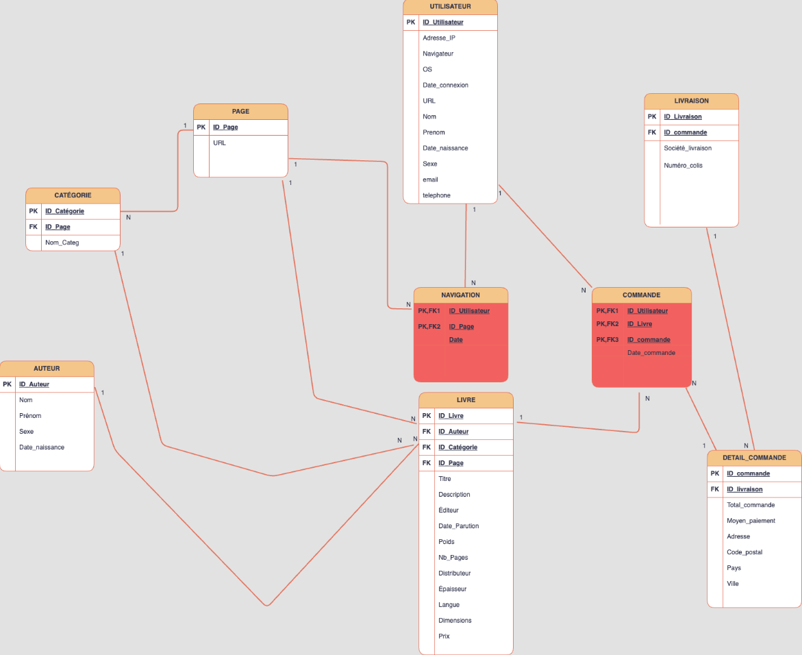

Intégration de données dans un data warehouse
02 février 2024

L'entreprise française de e-commerce Nil (www.nil.fr) nous a sollicités afin d’analyser le comportement des utilisateurs sur sa plateforme.
Pour ce faire, nous avons réalisé une modélisation relationnelle afin de lui créer une base de données.
L'objectif a été d'équiper l'entreprise d'un moyen de collecter ces données.
Cela lui permettra de produire des analyses, mais aussi de collecter des informations sur ces utilisateurs.
Il est important de préciser que c’est une entreprise fictive. Les outils utilisés dans ce projet seront
SQL pour la création de la base de données et la réalisation de requêtes. Nous utiliserons également R pour la génération et le retraitement des
données. Enfin, nous utiliserons Power BI dans le but de réaliser un dashboard interactif. Ce dernier permet d'analyser en temps réel les
données de l'entreprise NIL.
Nous avons dans un premier temps étudié rapidement l’environnement de l’entreprise afin de déterminer les meilleures stratégies à mettre en place. Nous avons, par exemple, réfléchi à une sélection judicieuse des tables à inclure dans la base de données. Il était crucial pour nous de maintenir la pertinence de notre modèle relationnel en évitant l'intégration de tables peu pertinentes pour répondre à notre objectif, qui est d'obtenir un ensemble maximal d'informations pour analyser le comportement des utilisateurs sur la plateforme Nil. Au sein de cette partie, nous avons bien pris en compte les spécificités de chaque table et leurs liaisons.
Ensuite, nous avons procédé à la création de la base de données et à son peuplement avec des données fictives que nous avons générées. Enfin, nous avons effectué des requêtes SQL et créé un tableau de bord à l'aide de Power BI pour mener nos analyses.
Les livrables de ce projet sont donc : un rapport technique justifiant nos méthodes, le code ayant permis la création de la base de données, un fichier contenant les données que nous avons générées et un tableau de bord Power BI interactif permettant d’analyser les données.
Ci-dessous, vous trouverez un développement détaillé de chaque partie, présentant plus concrètement le projet.
Modèle relationnel
Nous avons choisis d'utiliser un modèle relationnel en flocon. Ce dernier a pour objectif de réduire la redondance en normalisant les données.En effet, ici nous avons fait le choix d'utiliser 2 tables de faits pour stocker les données mesurées et transactionnelles.
Une table de fait est une table qui contient les données observables (les faits) que l’on possède sur un sujet et que l’on veut étudier, selon divers axes d’analyse (les dimensions). les « faits », dans un entrepôt de données, sont normalement numériques, puisque d’ordre quantitatif. Il peut s’agir du montant en argent des ventes, du nombre d’unités vendues d’un produit, etc.
Ce sont dans notre modèle, les tables Navigation et Commande. La première permet de mesurer le temps que l’utilisateur passe sur le site. Tandis que la seconde permet de mesurer les transactions,qui ici sont les commandes passées sur le site. Il est important d'avoir le maximum d'informations sur nos utilisateurs afin de pouvoir analyser au mieux leur comportement. Un utilisateur naviguant sur le site n’est pas forcément client. En conséquence, la table Navigation servira à étudier le comportement de tous les utilisateurs du site. Contrairement à la table commande, qui aura pour objectif d’analyser le comportement des clients ayant commandé un article sur la plateforme.
Puis, nous disposerons de 7 tables dimensionnelles contenant des attributs sur les données de l’entreprise Nil.
Une dimension est une table qui contient les axes d’analyse (les dimensions) selon lesquels on veut étudier des données observables (les faits) qui,soumises à une analyse multidimensionnelle, donnent aux utilisateurs des renseignements nécessaires à la prise de décision.
Cette structure forme donc un modèle en flocon avec des tables dimensionnelles communicant entres elles.

Les tables de dimensions sont les suivantes :
- Table Livre : La Table Livre contient tous les livres présents et en vente sur le site Nil. Dedans, on trouve toutes les informations relatives à chaque livre.
- Table Auteur : La Table Auteur contient l’ensemble des auteurs associés à chaque livre. Un livre peut appartenir qu’à 1 auteur, mais un auteur peut avoir écrit plusieurs livres.
- Table Catégorie : La Table Catégorie contient l’ensemble des catégories auxquelles peuvent appartenir les livres. Un livre ne peut appartenir qu’à une seule catégorie. Une catégorie peut contenir plusieurs livres.
- Table Page : La Table Page regroupe l’ensemble des pages du site de Nil.
- Table Utilisateur : La Table Utilisateur contient des informations relatives à l'utilisateur. Même si l’utilisateur ne passe pas de commande sur le site internet. Nous disposons d’informations sur ce dernier.
- Table Livraison : La Table Livraison contient des données qui concernent la livraison des colis et la société qui s’en charge.
- Table Détail Commande : La Table Détail Commande contient l’ensemble des informations essentielles pour chaque commande.
Tables de Fait : Commande et Navigation
Spécificité et relation des tables
Toutes les spécifités et relation ne seront pas détaillés ici. Vous pourrez les retrouver dans le rapport technique.Mais par exemple dans la table Utilisateur, il est possible que nos utilisateurs ait des valeurs manquantes sur les données nominatives (nom, prénom, adresse, sexe…). Cela s’explique par le fait que tout utilisateur n’est pas forcément client. Lorsque l’individu est simplement utilisateur, nous avons par exemple son adresse IP ou encore son navigateur de connexion. Ces informations sont exploitables et nous permettent de suivre l'utilisater sur la plateforme.
Chaque utilisateur qui passe une commande devient client. Nous obtenos ses informations personnelles lors du paiement. Lorsqu’un client revient sur le site avec le même appareil qu’il a utilisé pour commander et qu’il ne s’identifie pas. On pourra toujours savoir de quel client il s’agit, car ses informations personnelles sont déjà associées à une adresse IP.
En ce qui concerne les relations nous avons par exemple, la table Livre qui est liée à 4 autres tables (Auteur, Catégorie, Page et Commande). Quelques explications :
Un livre a été écrit par un auteur. Cependant, un auteur peut avoir écrit plusieurs livres.
Un livre appartient obligatoirement à une catégorie. Une catégorie peut contenir plusieurs livres.
Un livre possède une page de description. Une page peut contenir plusieurs livres, par exemple une page d’accueil de catégorie.
Un livre peut être dans plusieurs commandes. Cependant, une ligne commande dans la table commande ne peut contenir qu’un livre.
Granularité
Les tables de faits vont se rapporter à une granularité définie par les besoins. La granularité est de détail nécessaire à l’analyse du fait, choisie en amont. On distingue alors trois grandes familles de granularité :- Granularité de transaction : mesure unitaire d’une action métier.
- Granularité de l’instantané périodique : mesure des actions métier dans un intervalle fixe (semaine, mois, ...).
- Granularité de l’instantané récapitulatif : mesure des actions métier sur une période non prédéterminée
Les tables Commande et Navigation, ont une granularité transactionnelle, reflétant chacune des interactions ou des transactions spécifiques au sein de leur domaine respectifs.
Ici, la granularité transactionnelle va offrir une analyse détaillée, permettant une compréhension fine du comportement des utilisateurs et des détails spécifiques de chaque commande. Cette approche va favoriser la réactivité opérationnelle, car elle informera immédiatement l'entreprise Nil de chaque événement, tel qu'une commande passée, contribuant ainsi à respecter les délais de livraison et à optimiser la satisfaction client. Cependant, il est important de noter que la granularité transactionnelle entraînera probablement un volume de données important. La gestion de ce volume pourra devenir complexe à terme, affectant potentiellement les performances du stockage et des requêtes. Les requêtes sur des données transactionnelles pourront également devenir plus complexes en raison du grand nombre d'enregistrements, nécessitant une attention particulière pour optimiser les performances du système.
Type de gestion des changements
Les valeurs des dimensions peuvent être amenées à évoluer. Par exemple, dans notre cas un livre peut changer d’édition, de nom… Il y a donc plusieurs solutions pour gérer ce type de situation.Les différents types :
- Type 1 : Écrasement de l’ancienne valeur par la nouvelle
- Type 2 : Ajout d’une ligne pour intégrer la modification
- Type 3 : Ajout d’une colonne de dimension
| Nom de la table | Type de gestion des changements |
|---|---|
| Utilisateur | Type 1 |
| Livre | Type 1 |
| Auteur | Type 1 |
| Catégorie | Type 2 |
| Page | Type 2 |
| Navigation | Type 2 |
| Commande | Type 2 |
| Detail Commande | Type 2 |
| Catégorie | Type 1 |
Dimension douteuse, causale, dégénéré
Dans l’objectif, de mieux appréhender la dynamique complexe qui sous-tend la gestion de nos données, et permettant des analyses plus précises et de la compréhension du comportement des utilisateurs. Les dimensions jouent un rôle fondamental en structurant les données, apportant ainsi une cohérence et une signification cruciale à l'ensemble du système d'information décisionnel. Parmi les diverses catégories de dimensions, nous nous penchons sur trois types spécifiques afin de saisir pleinement leur impact sur la modélisation de nos données :- Dimension douteuse : Dimension pour laquelle le même attribut peut apparaître plusieurs fois (doublons)
- Dimension causale : Dimension qui provoque le fait
- Dimension dégénérée : Dimension sans attribut (donc sans table). La dimension est intégrée à la table de fait
Dans notre modèle relationnel, nous n’avons pas de dimension dégénérée. Nous avons cependant des dimensions douteuses. Ces dernières peuvent survenir lorsque le même attribut apparaître plusieurs fois, introduisant potentiellement des doublons ou des ambigüités. Nous en avons dans les tables suivantes : Utilisateur, Livraison, Auteur, Livre
Caractéristique des faits
L'additivité se réfère généralement à la propriété d'ajouter ou de combiner différentes quantités ou éléments pour obtenir une somme totale. L'additivité est une propriété importante dans la conception et l'interprétation des systèmes d'informations décisionnels, car elle permet de simplifier les calculs et de faciliter la compréhension des données agrégées.Il y a plusieurs propriétés d’additivité :
- Fait additif : additionnable suivant toutes les dimensions
- Fait semi additif : additionnable seulement suivant certaines dimensions
- Fait non additif : Non additionnable, peu importe la dimension
Conclusion
Grâce à notre modèle relationnel, nous avons résolu notre problématique initiale qui consistait à analyser le comportement des utilisateurs sur le site de Nil. Notre base de données regorge d'informations riches, offrant une compréhension approfondie du comportement des utilisateurs. En allant au-delà, nous avons également des données détaillées sur les clients et leurs commandes. La structure adoptée ici se distingue par son efficacité, facilitant une analyse approfondie et pertinente.Le sujet du projet était très intéressant. Il nous a vraiment permis de mettre en pratique tous que nous avons appris en cours de système d’informations décisionnelles. Cela nous a énormément plu. La phase de construction du modèle a exigé un investissement significatif. Le choix des tables ainsi que leurs liens nous ont pris beaucoup de temps. C’était réellement le cœur du problème et de la demande de l’entreprise Nil. La réalisation de la base a été plus facile et plus rapide. Lors de la réalisation du dashboard nous étions très contents lorsque nous avons pu avoir des représentations graphiques de nos données. Bien qu’elles soient fictives. Nous avons beaucoup aimé travailler ensemble. La collaboration et l’échange nous ont permis d’apprendre des autres.